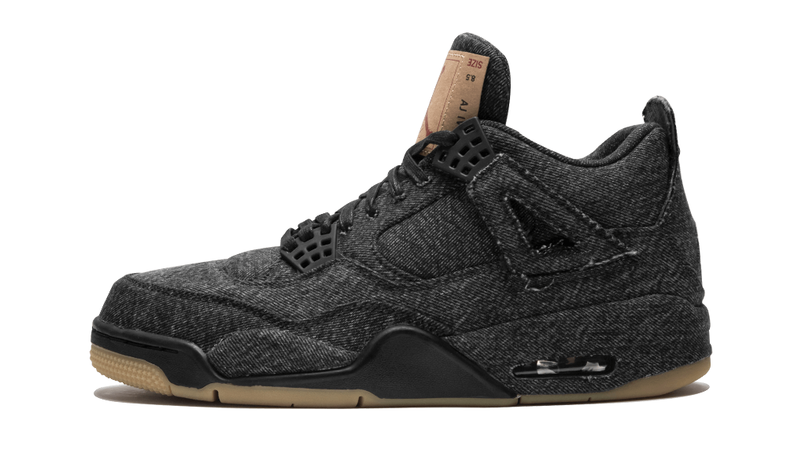
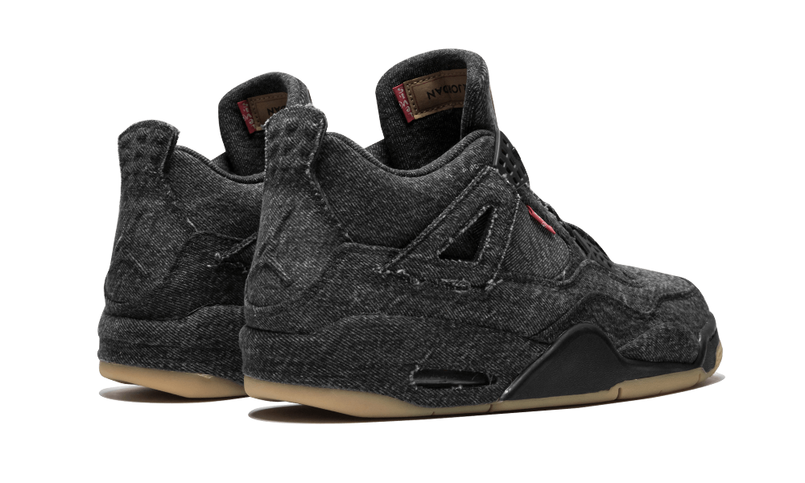
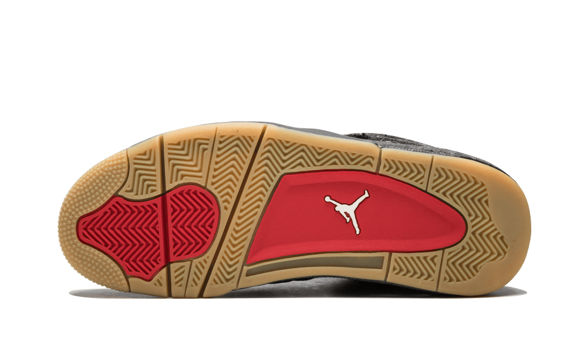
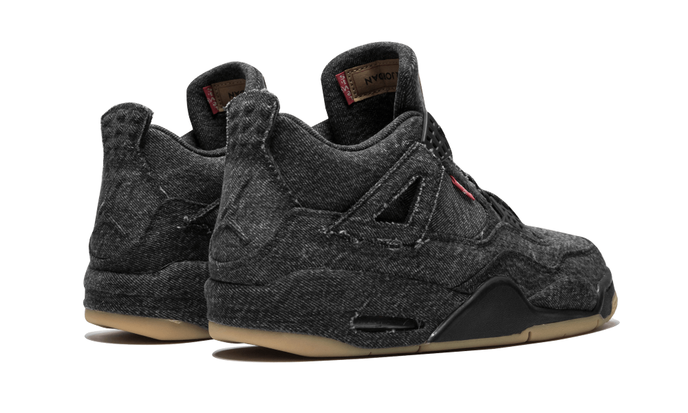
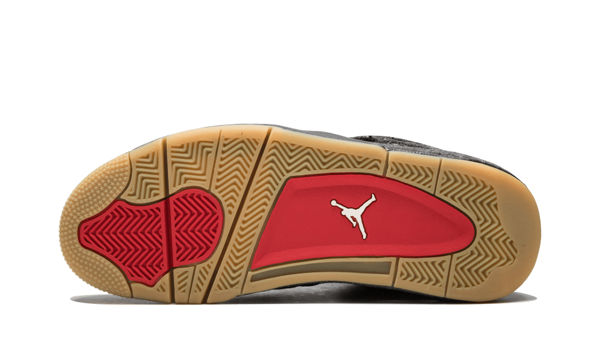
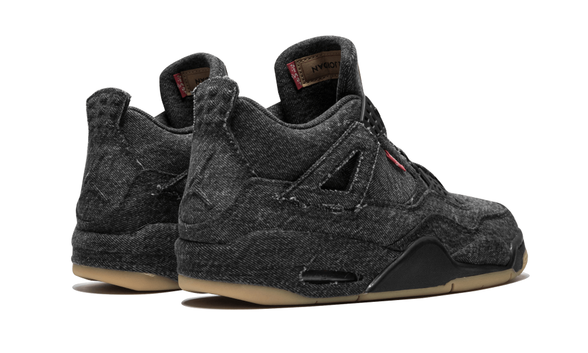
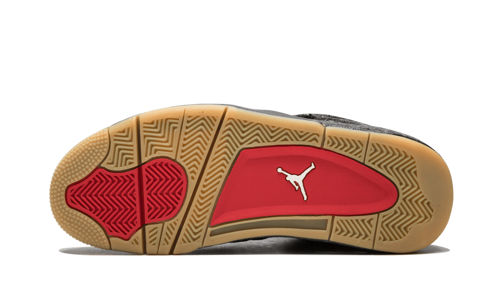

 





Levi's Air Jordan 4
Due to the huge success of the original Levi’s x Air Jordan 4 blue denim colourway, the two brands have come together again by releasing a black denim version of the sneaker and is called the Levi’s x Air Jordan 4 “Black”. This sneaker is created using the iconic American made material which covers up the upper and the midsole of the sneaker. The outsole of the sneaker is made out of rubber gum.